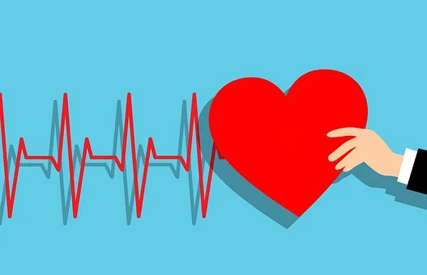

Cardiovascular Exercises

What Is Cardio?
Cardiovascular exercises are physical activities that aim to improve the heart and lungs' endurance by increasing the oxygen intake and circulation in the body. Cardio is one of the two main types of workouts: aerobic and anaerobic exercise. Both types of exercise are essential for a healthy brain and body. They can also help people who are trying to lose weight.
Anaerobic exercise involves high-intensity movements. These movements work your muscles so hard that you can only sustain them in short bursts.
Examples of anaerobic exercises:
- Sprinting
- High-Intensity Interval Training (HIIT)
- Weightlifting
Aerobic exercise is also known as cardio. Cardio workouts involve the use of the larger muscle groups and activities that require repetitive movements for an extended period. Unlike anaerobic exercise, our bodies can sustain these workouts for lengthier periods. Cardiovascular exercises work by increasing the heart rate and breathing rate, facilitating the blood flow and oxygen supply to the muscles' cells.
Examples of aerobic exercises:
- Taking the stairs
- Mowing the lawn
- Cycling
- Rowing
Benefits of Cardio Exercises
Cardio exercises have several benefits, listed below.
-
Improved cardiovascular health
Cardio exercises can help improve the health of the heart, blood vessels, and lungs. It reduces the risk of heart diseases, lowers blood pressure, and improves circulation in the body.
-
Weight loss
Cardio exercises are great for burning calories and help in weight loss. It helps in shedding excess body fat, which can improve overall health and self-esteem.
-
Reduced stress and anxiety
Cardio exercises can help reduce stress and anxiety levels in individuals. It promotes the release of endorphins, which is a natural mood booster, and improves overall mental health. As the heart rate and breathing increase, endorphins, the body's natural mood boosters, are released, improving the mood, reducing stress, anxiety, and depression.
-
Improved sleep
Cardio exercises can help improve sleep quality and duration. It helps in falling asleep faster, staying asleep longer, and improving the overall sleep cycle.
-
Increased Stamina
Cardio exercises can help improve overall endurance and stamina levels. It enables individuals to work out for longer periods of time, leading to more calories burned and better overall fitness levels.
-
Reduced risk of chronic diseases
Cardio exercises reduce the risk of chronic diseases like diabetes, stroke, and some forms of cancer. It improves overall health and reduces the risk of premature death.
-
Improved conginitive function
Cardio exercises can improve cognitive function by enhancing blood flow and oxygen to the brain. This leads to better focus, concentration, and overall mental clarity. Exercising regularly also enhances brain function and cognitive abilities, improving memory, focus, and decision-making skills.
-
Improved metabolism
Cardio exercises can increase metabolism, which is the rate at which the body burns calories. This leads to better overall health and fitness levels, and promotes weight loss and weight management.
-
Improves lung health
As the body adapts to the increased demand for oxygen, the respiratory and cardiovascular system improves, making it more efficient for the body to perform physical activities. This, in turn, strengthens the heart, lungs, and other muscles, reducing the risk of cardiovascular diseases, diabetes, and obesity.
Glossary of Cardio Exercise Terms
- Energy Systems
- There are 3 energy systems that power our exercise activity (1) phosphagen, (2) glycolitic 1, and (3) aerobic. The phosphagen system is engaged during exercise bouts of less than 10 seconds, the glycolitic system predominates in exercise bouts of less than 2 minutes, and the aerobic system predominates for longer duration exercise, typically 5 minutes or more.
Aerobic Exercise
Aerobic exercise is an activity that requires energy production with oxygen and is the 3rd energy system. If you’re doing aerobic exercise then you’re sending oxygen, through your breath, to your muscles giving them the energy to sustain your exercise. You’re conditioning your heart and lungs by enabling your heart to use your oxygen more efficiently.
Anaerobic Exercise
Anaerobic Exercise is an activity that requires energy production without oxygen and comprise the first two energy systems (phosphagen and glycolitic). If you’re doing anaerobic exercise, because you are training at your maximum level of exertion, you’re not sending enough oxygen to your muscles to sufficiently sustain the effort. For this reason, your body builds up lactic acid.
Max Heart Rate (HRmax)
The highest heart rate you can safely reach through physical exertion.
Target Heart Rate
The optimal heart rate at which an athlete should perform a particular sport activity, determined by a formula that bases training intensity zones on heart rates as percentages of max heart rate.
Cool Down
This is the phase of an exercise routine in which you to slow down, recover, and reduce your heart rate. A cool down will help you get oxygen to the muscles as well as get rid of waste products such as lactic acid. Depending on the intensity and duration of the workout a cool down can last anywhere from 2-15 minutes.
VO2 Max
This is a measure of cardiovascular health and fitness: its name is derived from V (volume) and O2 (oxygen). It is the maximum capacity of an individual’s body to transport & use oxygen during incremental exercise, reflecting the physical fitness of the individual.
Aerobic Capacity
This is the highest amount of oxygen consumed during maximal exercise (especially in activities that incorporate large muscle groups), meaning, is the maximum amount of oxygen a body can use in an exercise session.
Hitting the Wall (aka Bonking)
This is a condition caused by the depletion of glycogen stores in the liver and muscles, which manifests itself by sudden fatigue and loss of energy.
Glycogen
This is a polysaccharide (form in which most natural carbohydrates occur) that serves as a form of energy storage: glycogen is stored so it can be broken down into glucose for fuel. It is made and stored primarily in the cells of the liver and the muscles in humans.
Cross Training
A method of training that aims to combine exercises that work various parts of the body as often one particular activity works certain muscle groups, but not others.
High Intensity Interval Training
This is a method of training that involves a series of low to high-intensity exercise workouts interspersed with rest or relief periods.
Fartlek Training
This is a type of training method that blends continuous training with interval training. This system taxes both the aerobic and anaerobic systems because of its varying intensities and continuous work output. It differs from traditional Interval training in that is unstructured and sprint and rest times can vary throughout the entirety of 30-45-minute session.
Tabata Training
This is a type of interval training that follows a specific format: 20 seconds of a very high intensity exercise (e.g., sprints) with 10 seconds of rest where you repeat 8 times for a total of 4 minutes.
Steady State Cardio
This is simply a cardio workout that is a continuous, steady effort, as opposed to an interval cardio workout where you vary your energy output.